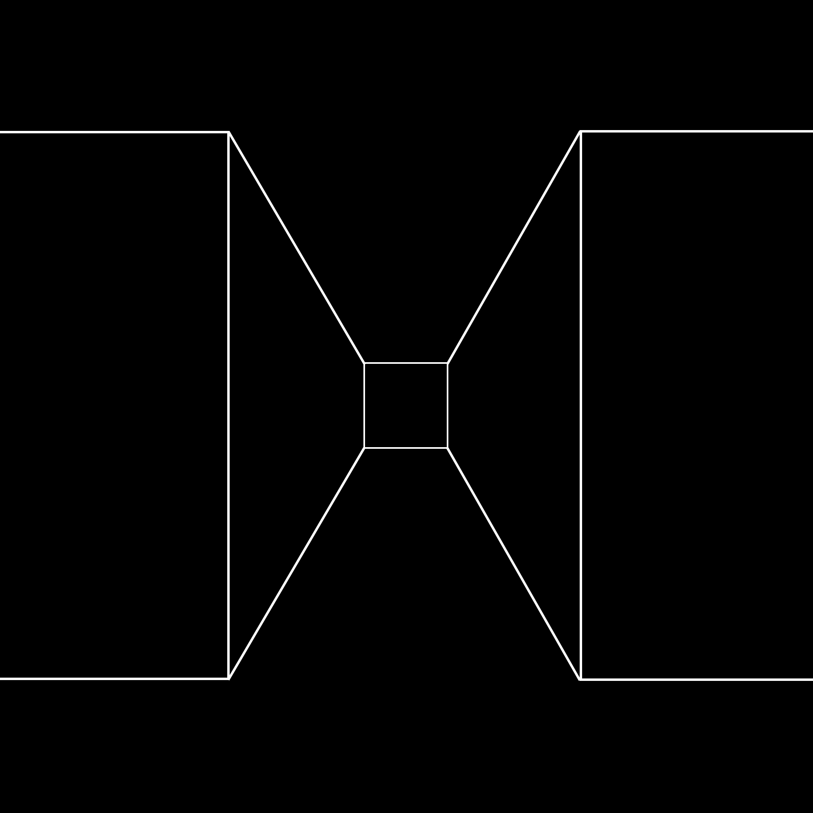

Now here is something really interesting (to me), something you can use at a standing-up-only party when everyone is tired of hearing there are one million three-thousand-two-hundred-ninety-five words used by the Esimo for snow. This is what Ezra Pound learned from Ernest Fenollosa: Some languages are so constructed—English among them—that we each only really speak
one sentence in our lifetime.
That sentence begins with your first words, toddling around the kitchen, and ends with your last words right before you step into the limousine, or in a nursing home, the night-duty attendant vaguely on hand. Or, if you are blessed, they are heard by someone who knows you and loves you and will be sorry to hear the sentence end.